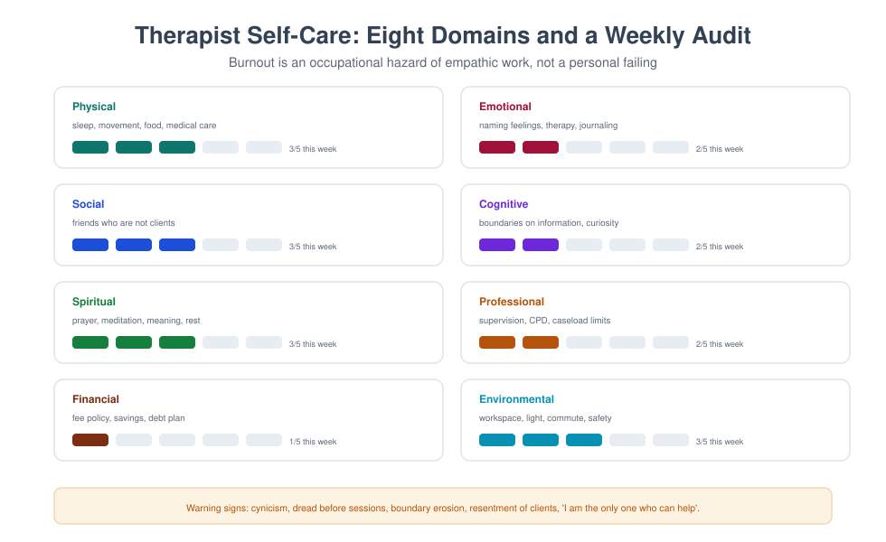

MFT 722 — Professional Development and Self-Care
Course leader's summary. This is not a wellbeing add-on at the end of training. It is the course that decides whether you are still practising in fifteen years, and whether the practising is any good. It treats the therapist's own life as the primary instrument, and professional development as a discipline rather than an ambition.
How to use this book
Every week has a professional task and a personal one. Do both. The course is assessed largely on a portfolio, and a portfolio written retrospectively in the final week will be visible and weak. Keep a weekly entry; it takes eight minutes.
1. Course description
The course covers: the person of the therapist; burnout, compassion fatigue and vicarious trauma; boundaries and availability; personal therapy; reflective practice and supervision; continuing professional development; career pathways and private practice fundamentals; money, contracts and pricing; professional identity and belonging; and sustainable practice in resource-limited settings.
2. Learning outcomes
| # | Outcome | Assessed |
|---|---|---|
| LO1 | Assess your own burnout and vicarious trauma risk using structured tools | Portfolio |
| LO2 | Design a personal and professional self-care plan that survives a busy month | Plan |
| LO3 | Set and maintain boundaries with clients, colleagues and institutions | Viva |
| LO4 | Plan continuing professional development against a competency framework | CPD plan |
| LO5 | Explain the fundamentals of ethical private practice (contracts, fees, records) | Exam |
| LO6 | Use reflective practice and personal therapy appropriately | Portfolio |
| LO7 | Articulate a five-year professional trajectory | Presentation |
3. Assessment
| Component | Weight | Due |
|---|---|---|
| Reflective portfolio (10 entries) | 35% | Fortnightly |
| Personal and professional sustainability plan (1,500 words) | 25% | Week 10 |
| Practice readiness viva (20 min) | 25% | Week 13 |
| CPD and career presentation (10 min) | 15% | Week 14 |
4. The fourteen-week plan
| Week | Topic | Task |
|---|---|---|
| 1 | The person of the therapist | Therapy autobiography (private) |
| 2 | Burnout: what it is and how it develops | Maslach self-assessment |
| 3 | Compassion fatigue and vicarious trauma | Symptom inventory |
| 4 | Boundaries: time, contact, disclosure, gifts | Boundary audit |
| 5 | Personal therapy and its place in training | Decide and plan |
| 6 | Reflective practice: models and habits | Weekly reflection structure |
| 7 | Supervision as a career-long practice | Supervision plan |
| 8 | CPD and competency frameworks | CPD gap analysis |
| 9 | Career pathways in MFT | Pathway map |
| 10 | Sustainability plan due; money, fees and contracts | Fee and contract design |
| 11 | Private practice fundamentals | Practice blueprint |
| 12 | Professional identity, community and belonging | Professional network plan |
| 13 | Practice readiness viva | Assessed |
| 14 | CPD and career presentation | Assessed |
Week 1 — The person of the therapist
The premise. You cannot separate the clinician from the person. Your history shapes what you notice, what you avoid, whom you like, and where you lose your balance.
The "therapy autobiography". Write, privately, about: your family of origin; the rules you absorbed; the losses; the roles you played; what you learned about conflict, intimacy, money and authority; and why you chose this work. Do not submit it. Do keep it, and revisit it in three years.
Common motivations and their risks.
| Motivation | Strength | Risk |
|---|---|---|
| "I want to help people" | Compassion | Rescuing; over-functioning |
| "I want to understand my family" | Insight | Using clients to solve your own history |
| "People tell me I'm easy to talk to" | Alliance skill | Difficulty setting boundaries |
| "I survived something" | Credibility | Over-identifying; avoidance of certain material |
| "I want status/expertise" | Drive | Distance; difficulty with not-knowing |
The professional requirement. Know your history well enough that you can tell the difference between your client's material and your own reaction. Personal therapy and supervision exist for this, not because something is wrong with you.
Week 2 — Burnout
Definition (Maslach): a syndrome of emotional exhaustion, depersonalisation/cynicism, and reduced sense of accomplishment, arising from chronic occupational stress.
The six drivers (Maslach & Leiter) — all of them organisational:
- Workload
- Control (or lack of it)
- Reward (financial, social, intrinsic)
- Community
- Fairness
- Values (mismatch between what you believe and what the system asks)
The clinically important point. Burnout is not a personal failing and cannot be solved by yoga. If the caseload is impossible, the supervision absent and the values compromised, self-care is a distraction from the real problem.
Self-assessment. Use the Maslach Burnout Inventory or the freely available Copenhagen Burnout Inventory. Score yourself honestly; write one paragraph on which of the six drivers is most active in your current situation.
Week 3 — Compassion fatigue and vicarious trauma
Three distinct concepts.
| Concept | Definition | Signature |
|---|---|---|
| Burnout | Exhaustion from workload | "I am too tired to care" |
| Compassion fatigue | Reduced empathy and satisfaction from caring | "I used to feel for people; now I don't" |
| Vicarious trauma | Changes to beliefs and inner world from exposure to others' trauma | "The world is not safe; people are dangerous" |
Signs to monitor in yourself. Intrusion of client material; nightmares; avoidance of certain cases; cynicism; irritability at home; numbness; loss of hope; over-involvement; boundary erosion; sleep and appetite change; increased alcohol use.
Protective factors with evidence. Supervision that addresses the emotional impact; caseload diversity; control over scheduling; peer support; meaning-making; sleep and exercise; personal therapy; and organisational support.

Week 4 — Boundaries
The boundaries that matter most in early practice.
| Boundary | The trap | A workable standard |
|---|---|---|
| Time | Sessions over-run; you arrive early, leave late | Fixed session length; 10 minutes between clients |
| Contact | Clients text at night; you reply | Written policy; emergency route; no personal number |
| Disclosure | You share to reassure | Disclose for the client's benefit, rarely, and briefly |
| Gifts | Refusing feels rude | Accept small cultural gifts; discuss significant ones |
| Social media | Client requests; you see their posts | Clear policy; never search for clients |
| Dual roles | Church, community, family ties | Disclose, discuss, refer if unmanageable |
| Emotional labour | You become the family's friend | Warmth plus frame; endings are explicit |
The test. Not "was it kind?" but "whose need did it serve, and would I be comfortable explaining it in supervision?"
Week 5 — Personal therapy
Requirements vary. Many training programmes require a minimum number of personal therapy hours. Treat the requirement as a floor, not a target.
What it is for. Not to become "fixed", but to know your patterns well enough to notice them in the room; to have a place to process work that is not your supervisor's job; and to experience being a client.
What to look for in a therapist. A different orientation from yours (to see another way of working); a recommendation from someone you trust; a clear contract; and someone you can be honest with.
The cost problem. Therapy is expensive, and trainees are often poorly paid. Options: reduced-fee schemes, group therapy, university counselling services, peer consultation groups, and budgeting it as a professional expense rather than a luxury.
Week 6 — Reflective practice
Reflection is a method, not a mood. Use a structure.
The Gibbs cycle, applied to a session: description → feelings → evaluation → analysis → conclusion → action plan.
Six questions to answer weekly.
- What happened that surprised me?
- What did I feel, and where in my body?
- What did I avoid?
- What did I do that worked?
- What would I do differently?
- What do I need to bring to supervision?
Writing. Keep one page per week. Do not write case details in a personal journal that is not secure; use initials or pseudonyms, and never store client-identifying material outside the clinical record.
Week 7 — Supervision as a career-long practice
The norms. One hour of supervision for every five hours of clinical work is the common standard; more for complex cases and for trainees.
How to use supervision well.
- Arrive with an agenda and one clear question.
- Bring the case you least want to bring.
- Say what you felt, not only what you did.
- Ask for observation, not only opinion ("what would you have said?").
- Record what you will do differently, and report back next time.
Peer consultation groups. A complement, not a substitute: 3–5 clinicians, monthly, structured, with a confidentiality agreement and a rotating facilitator.
Week 8 — Continuing professional development
Frameworks. Most professional bodies require annual CPD across domains: clinical practice, supervision, ethics, research, teaching, management. Map your year against the domains rather than collecting certificates.
A CPD plan that works.
- Identify three gaps from your competency self-assessment.
- For each, specify an activity, a date, and an evidence of completion.
- Include one activity that stretches you (a new modality, a research skill, a leadership role).
- Review every six months; adjust.
Beware CPD theatre. Ten webinars on topics you already know count for nothing. One supervised course in an area of genuine weakness counts for a great deal.
Week 9 — Career pathways
| Pathway | What it needs | What it gives | What it costs |
|---|---|---|---|
| Clinical specialist | Depth in a modality; supervision; certification | Expertise, referrals | Narrowing |
| Public sector clinician | Systems navigation; resilience | Security, breadth | Bureaucracy, heavy caseloads |
| Private practice | Business skills, capital, network | Autonomy, income potential | Isolation, income volatility |
| Academic/teaching | Research, publication, teaching | Influence, stability | Bureaucracy, distance from clinic |
| Supervision/consultation | Experience, accreditation | Leverage, variety | Responsibility for others' practice |
| NGO/humanitarian | Flexibility, languages, resilience | Meaning, breadth | Insecurity, exposure to trauma |
| Policy/advocacy | Writing, networks, patience | Scale of impact | Slowness, compromise |
The honest question. Which of these fits the life you actually want — including your family, your health, and your finances — not only the career you imagined at 22?
Week 10 — Money, fees and contracts
Fees are clinical decisions. Set them deliberately; publish them; apply them consistently; review annually.
A fee policy covers: the fee; session length; payment method and timing; late cancellation; non-attendance; sliding scale criteria (decided in advance); annual review; and what happens to outstanding balances.
Contracts. Even a one-page agreement prevents most disputes: parties, purpose, confidentiality and limits, fees, cancellation, contact policy, complaints route, and signatures.
The uncomfortable truths.
- Charging is not exploitation; under-charging until you resent clients is.
- A sliding scale with no criteria becomes arbitrary and unfair.
- Chasing unpaid fees is a clinical conversation, not an administrative one.
- You will need to budget for tax, insurance, supervision, CPD and sick leave.
Week 11 — Private practice fundamentals
The blueprint. Location and room (privacy, sound, waiting area, accessibility); legal structure and registration; professional indemnity insurance; record-keeping and data protection; booking and payment systems; referral network; risk and emergency protocols; supervision arrangement; and a marketing approach that is ethical and honest.
Starting safely. Keep a part-time employed post while you build; take a business course or find a mentor; decide your niche only after 50 cases, not before; and never practise without supervision, however experienced you are.
Isolation is the occupational hazard. Build a peer group before you need one.
Week 12 — Professional identity and belonging
Belonging matters. Clinicians who are connected to a professional community report less burnout, better decision-making, and greater persistence.
How to build it. Join a professional association; attend one conference a year; contribute to a peer group; teach one workshop; write one short piece; mentor one junior colleague.
Identity in a contested field. Family therapy sits between psychology, psychiatry, social work and counselling. Be clear about who you are and what you offer, without disparaging others: "I am a systemic therapist; my expertise is in relationships. I work alongside your psychiatrist, not instead of them."
Week 13 — Practice readiness viva
Twenty minutes. Questions drawn from: boundary scenarios, burnout scenarios, ethical dilemmas, fee conversations, supervision difficulties, and career planning. Assessed on judgement, honesty, and the ability to name your own limits.
Week 14 — CPD and career presentation
Ten minutes on where you are, where you are going, what you need, and what you will stop doing. Include one commitment to your own sustainability that is specific, dated, and verifiable.
Glossary
Burnout — exhaustion, cynicism and reduced efficacy from chronic occupational stress. Compassion fatigue — reduced empathy and satisfaction resulting from prolonged caring. Compassion satisfaction — the positive counterpart: meaning and pleasure derived from helping. CPD — continuing professional development. Reflective practice — structured examination of one's own work and reactions. Vicarious trauma — transformation of the therapist's inner world through exposure to others' trauma.
Self-assessment
Multiple choice
1. Burnout is primarily caused by: (a) personal weakness (b) chronic occupational stressors (c) too much supervision (d) client resistance
2. Vicarious trauma is characterised by: (a) tiredness (b) changes to beliefs and inner world (c) low fees (d) poor timekeeping
3. A workable contact boundary is: (a) giving your personal number (b) a written policy with an emergency route (c) replying at night (d) no policy
4. Personal therapy in training is best understood as: (a) a punishment (b) a professional requirement and an investment (c) unnecessary (d) a substitute for supervision
5. The recommended supervision ratio is roughly: (a) 1 hour per 20 client hours (b) 1 hour per 5 client hours (c) 1 hour per year (d) no standard
6. A useful CPD plan starts from: (a) available webinars (b) a competency gap analysis (c) cheap courses (d) colleagues' choices
7. Fee policies should be: (a) improvised (b) written, published and applied consistently (c) secret (d) identical everywhere
8. Peer consultation groups: (a) replace supervision (b) complement supervision (c) are unnecessary (d) are illegal
9. Reflection is best done: (a) once a year (b) weekly with a structure (c) only in crisis (d) verbally only
10. Private practice should ideally begin: (a) with no supervision (b) alongside employed work with supervision in place (c) with maximum debt (d) without insurance
Answer key
1 b · 2 b · 3 b · 4 b · 5 b · 6 b · 7 b · 8 b · 9 b · 10 b
Short answer
- Name the three dimensions of burnout and the six organisational drivers.
- Distinguish burnout, compassion fatigue and vicarious trauma.
- List five boundaries and the standard you will use for each.
- What are the six questions of a weekly reflection?
- Outline the components of a fee policy.
Essay (choose one, 1,500 words)
- "Self-care is a professional obligation, not a luxury." Discuss with reference to the evidence on burnout.
- Design a sustainable practice model for a newly qualified family therapist in a low-resource setting.
- Analyse your own family-of-origin patterns and their likely effect on your clinical work.
Further reading
- Norcross, J. C., & Guy, J. D. (2019). Leaving It at the Office (2nd ed.). Guilford.
- Figley, C. R. (Ed.). (1995). Compassion Fatigue. Brunner/Mazel.
- Maslach, C., & Leiter, M. P. (2016). Understanding the burnout experience. World Psychiatry, 15(2), 103–111.
- Skovholt, T. M., & Trotter-Mathison, M. (2014). The Resilient Practitioner (3rd ed.). Routledge.
- Bolton, G. (2018). Reflective Practice (5th ed.). Sage.